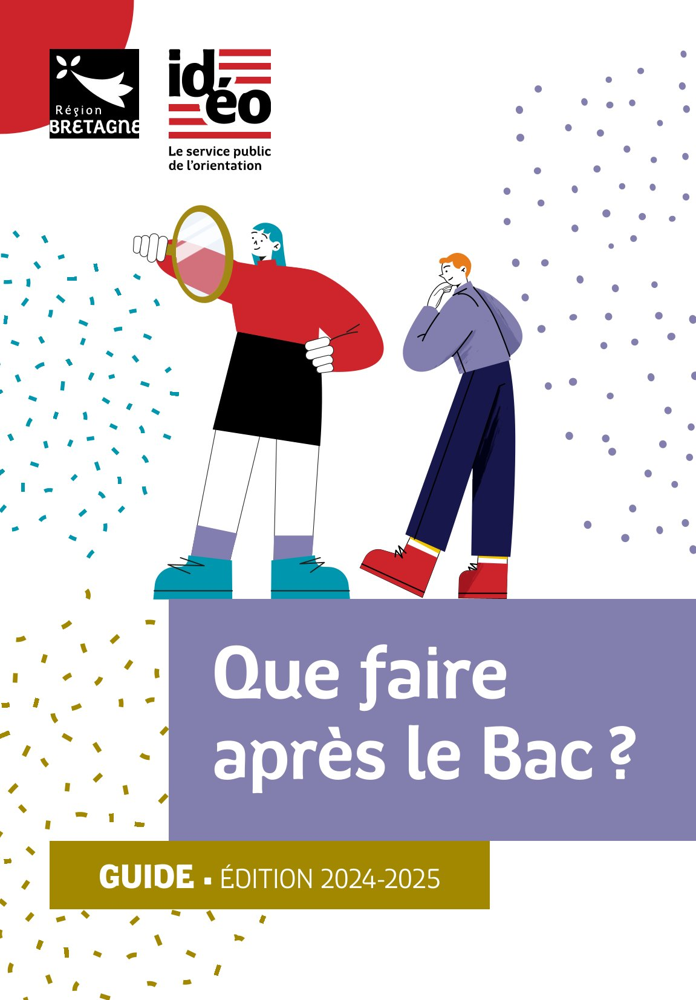
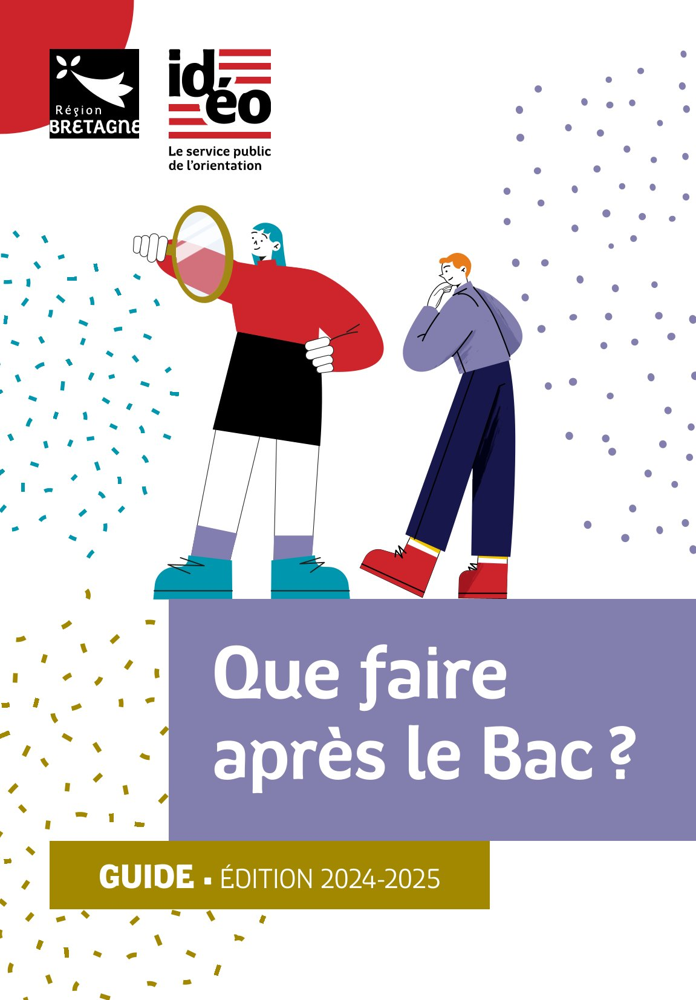

Parcours avenir

L'actualité de l'orientation au lycée et dans la région, les sites incontournables pour construire son parcours avenir, des ressources par niveau, les informations concernant les salons et forums, la vie étudiante...
ACTUALITES⚓︎


Un espace au service de l'emploi
- L'Espace métiers : un lieu pour s'informer à Brest métropole...
RESSOURCES⚓︎
Pour TOUS⚓︎
Pour TOUS

- Réussir au lycée et APRES...
- Construire ses PROJETS D'AVENIR au lycée
- ONISEP : Éditeur public, l'Onisep produit et diffuse toute l'information sur les formations et les métiers.
- Orientation pour tous : recherche par formations et par régions.
- 1001 orientation : 1001 conseils, 1001 parcours pour choisir sa voie...
- L'Etudiant : des outils pour réussir son orientation, des tests en ligne pour affiner sa réflexion sur l'orientation, le service de coaching du site de l'Etudiant...
- THOTIS - Le média étudiant : découvrir les formations et trouver sa voie - Affiner son projet en contactant des étudiants - Se renseigner sur Parcoursup.
- SNU : présentation du Service National Universel et accès au portail pour s'inscrire.
Tous les guides IDEO pour l'aide à l'orientation.
- -
-
-
1- Des métiers selon mes goûts
2- Quels métiers demain ?
3- Quiz apprentissage
4- Quelles études supérieures ?
5 Quiz secteurs.
6 Quiz égalité filles-garçons.
7- Vraies-fausses idées sur la FAC.
-
Tests d'orientation : pour mieux se connaître et découvrir des pistes pour mon avenir. (sources : Studyrama)
- Quel métier est fait pour moi ? : pour trouver sa voie, son futur métier et construire son projet professionnel. (Sources : L'Etudiant)
- Les métiers de demain : les métiers qui recrutent (Sources : Onisep)
- Portail de l'Alternance
- Pôle emploi
- L'Etudiant : dossier sur l'alternance (Ecoles, formations, entreprises, offres...)
- AREP29 : CFA et centre de formation continue à Brest (CAP, BTS et Bac+3 en alternance, formation continue des salariés d'établissements...)
- Chambre des métiers et de l'artisanat
- IBEP-Morlaix : toutes les formations professionnelles sur Morlaix.
- ISFFEL : chercher sa formation en alternance sur le site de l'Institut Supérieur de Formation.
- Les compagnons du devoir
- Guide de la vie étudiante - 2023
- Vie étudiante : Infos, services, FAQ
- FAQ vie étudiante
- Jeunes.gouv.fr
- CROUS et CROUS Bretagne
- Mes services étudiants
- Etudes, vie étudiante et handicap: Handiversité dispositif d’accompagnement spécifique de l'UBO.
- ERASMUS+
- Etudions à l'étranger
- Easylangues : trouver un job ou un stage à l'étranger...
SPECIALITES⚓︎
Enseignements de SPECIALITE
- Les spécialités du BAC : calendrier, conseils, témoignages d'étudiants, attendus Parcoursup...
- Programmes et attendus des 13 spécialités ? (Sources : Studyrama)
- SIMULATEUR (Sources :L'Etudiant)
- Quelles spécialités pour quelles études ? : les spécialités recommandées par type de formation ou par domaine d'études.
Niveau 2nde⚓︎
SECONDE
- Horizons21 : pour simuler des combinaisons de spécialités et découvrir des pespectives de formations et des métiers.
- MODULE AVENIRS LYCEE : les étapes pour construire mon avenir au lycée.
Pour choisir les spécialités du BAC, reportez-vous à la rubrique SPECIALITES plus haut.
Niveau 1re⚓︎
PREMIERE
- Réussir au lycée : le choix des spécialités.
- Horizons21 : pour simuler des combinaisons de spécialités et découvrir des pespectives de formations et des métiers.
- MODULE AVENIRS LYCEE : les étapes pour construire mon avenir au lycée.
Reportez-vous aussi à la rubrique SPECIALITES plus haut.
- Salons - Forums de l'orientation : comment préparer sa visite à un salon ?
- AZIMUT : site officiel du salon les 23-24 janvier 2026 Parc des expositions à Brest.
- SUP'ARMOR : l'équivalent d'Azimut dans le 22 du 11 au 13 décembre 2025.
- STUDYRAMA : dates des prochains salons étudiants...
Niveau Tle⚓︎
TERMINALE
- MODULE AVENIRS LYCEE : les étapes pour construire mon avenir au lycée.(Sources : Onisep)
- Enseignement supérieur : Ministère chargé de l'enseignement supérieur. (Sources : Ministère de l'enseignement supérieur et de la recherche)
- Quelles études après le BAC : étude courtes, longues, licence, BUT, BTS, écoles spécialisée... découvrez toutes les possibilités qui s'offrent à vous. (Sources : Onisep)
- Quelle école après le BAC ? : IPESUP, préparations aux examens et concours de l’enseignement supérieur.
- Ensemble des ressources de la DGESIP : Direction Générale de l'Enseignement Supérieur et de l'Insertion.
- Annuaire de l'enseignement supérieur en Finistère : Formations, écoles, témoignages d'étudiants... (Sources : L'Etudiant)
- Enseignement supérieur Côtes d'Armor : Formations, écoles, témoignages d'étudiants...
- Témoignages d'étudiants : Série web, ma première année en... (Sources : Onisep)
- PORTES OUVERTES DU SUPERIEUR - 2025/2026 - Accéder au moteur de recherche
- Catalogue IDEO des IMMERSIONS - Bretagne
- Printemps de l'orientation
ATTENTION : Certaines dates peuvent ne pas être à jour. N'hésitez pas à vérifier directement sur les sites des établissements.
UNIVERSITES
- UBO - CAP'AVENIR : inscriptions à partir de mi-janvier 2026 pour de nouvelles immersions pendant les vacances de février.
- UCO Guingamp : événements à venir de l'UCO
- Salons - Forums de l'orientation : comment préparer sa visite à un salon ?
- SALONS DE L'ETUDIANT : en France, recherche par région et domaine.
- AZIMUT : site officiel du salon les 23-24 janvier 2026.
- SUP'ARMOR : l'équivalent d'Azimut dans le 22 du 11 au 13 décembre 2025.
- STUDYRAMA : dates des prochains salons étudiants...
- EMSLB : dates des concours pour l'entrée en Ecoles Militaires de Santé de Lyon-Bron.
- EMSLB - infirmier : devenir infirmier militaire en intégrant les écoles militaires de santé Lyon-Bron. Voir la plaquette
- IPESUP : préparation aux concours des filères sélectives telles que Sciences PO, ENA, HEC, SESAME, ACCES, ALPHA, AVENIR, GEIPI/POLYTECH, MATH SUP, MATH SPE, DSCG, CELSA...
Voie professionnelle⚓︎
VOIE PRO
- PORTES OUVERTES DU SUPERIEUR - 2025/2026 - Accéder au moteur de recherche
- Catalogue IDEO des IMMERSIONS - Bretagne
- Printemps de l'orientation
ATTENTION : Certaines dates peuvent ne pas être à jour. N'hésitez pas à vérifier directement sur les sites des établissements.
UNIVERSITES
- UBO - CAP'AVENIR : inscriptions à partir de mi-janvier 2026 pour de nouvelles immersions pendant les vacances de février.
- UCO Guingamp : événements à venir de l'UCO
- Salons - Forums de l'orientation : comment préparer sa visite à un salon ?
- Azimut : site officiel du salon des 23-24 janvier 2026
DOMAINES⚓︎
Agriculture - Bois⚓︎
Liens utiles
- APETICA : spécialiste de l'emploi en agriculture, agroalimentaire et environnement.
- Métiers et formations dans l'agriculture (Sources : Onisep)
Architecture - Construction - Travaux publics⚓︎
Liens utiles
- ENSAB : Ecole Nationale Supérieure d'Architecture de Bretagne.
Semaine de l'industrie
Pilotée par la Direction générale des Entreprises, la Semaine de l’industrie contribue à changer le regard du grand public et des jeunes sur l’industrie et ses métiers au travers d’événements organisés partout en France.
En Bretagne, la prochaine édition aura lieu du 17 au 23 novembre 2025 et est pilotée par AJIR Bretagne. Découvrez tous les événements en Bretagne et au niveau national.
L’objectif : renforcer l’attractivité du secteur et promouvoir les filières et métiers de l’industrie auprès des collégiens, lycéens, apprentis ou toute personne en recherche d’emploi.
Armée - Sécurité⚓︎
Liens utiles
- Armée de l'air : devenir aviateur.
- EETAA : Ecole d'Enseignement Technique de l'Armée de l'Air et de l'Espace. Avis de recrutement d'élèves en 1ère et terminale.
- Armée de terre : 117 spécialités dans 16 domaines d'activité.
- Marine Nationale : La marine recrute, rejoignez l’équipage...
- ENSM : Ecole Nationale Supérieure Maritime (Le Havre - Marseille - Nantes - Saint-Malo).

Arts - Artisanat - Culture⚓︎
Liens utiles
- Etudes d'art (Sources : Onisep)
- CMA Chambre des métiers de l'artisanat d'art
- Ecoles Nationales d'art (Ministère de la Culture)
- CREAPOLE Ecole de désign (Paris).
- Etudes Arts du spectacle (ONISEP)
- Ecoles du spectacle (ONISEP)
- Ecoles et formations (L'Etudiant)
- Option études théâtrales au Lycée de Cornouailles à Quimper.
Audiovisuel - Information - Communication⚓︎
Liens utiles
- Les écoles d'audiovisuel (Sources : Onisep)
- Ecole des métiers du cinéma et de l'audiovisuel : L'ESEC propose une formation reconnue par le ministère de la Culture, sur Paris et lyon.
Commerce - Vente - Marketing⚓︎
Liens utiles
- Commerce et distribution : métiers, emploi et formation dans le commerce et la distribution. (Sources : Onisep)
- Marketing, publicité : métiers, emploi et formations dans le marketing et la publicité. (Sources : Onisep)
- SESAME : concours d'entrée commun à 17 programmes postbac de 14 grandes écoles de commerce et de management international.
Droit - Economie - Gestion⚓︎
Liens utiles
- Droit et justice : métiers, emploi et formations dans le droit et la justice. (Sources : Onisep)
- Comptabilité - Gestion - Ressources humaines : métiers et emploi dans le secteur. (Sources : Onisep)
Energies - Environnement⚓︎
Liens utiles
- Energie : métiers, emploi et formations dans le secteur de l'énergie. (Sources : Onisep)
- Environnement : métiers, emploi et formations dans le secteur de l'environnement. (Sources : Onisep)
- A découvrir au Lycée Notre-Dame de Guingamp : BTS Métiers de l'eau et BUT MA ME - Maintenance Avancée Parcours Métiers de l'eau
Enseignement⚓︎
Liens utiles
- Devenir enseignant - MEN : Comment devenir enseignant, se répérer dans les concours des premier et second degrés ? Découvrir le métier et les voies qui y mènent sur le site du Ministère de l'Education Nationale et de la Jeunesse.
- Dossier Enseignement : métiers et emploi dans l'enseignement. (Sources : Onisep)
Informatique - Internet⚓︎
Liens utiles
- Métiers et emploi dans le secteur (Sources : Onisep)
- EPITECH : école référence de l'expertise informatique.
- Grande école du numérique : actualités, portes ouvertes, les tendances du secteur, les métiers les plus recherchés, la place des filles dans les métiers du numérique...
- Métiers et emploi dans le jeu vidéo (Sources : Onisep)
- CREAPOLE : formation pour devenir Game designer ou réalisateur de films d'animation.
Santé - Social - Sport⚓︎
Liens utiles
- IRSS : Organisme de formation et de préparation aux métiers du sport, de la santé, de la sécurité, du social et de la petite enfance.
- ARS Mon métier mon histoire : l'ARS présente sur cette chaîne Youtube des témoignages de professionnels des métiers de la santé et du social.
- Les études de santé : Maïeutique, médecine, odontologie, pharmacie (Sources : Onisep)
- ICO : Institut et Campus d'Optique.
- IFAS : Institut de Formation Aide-soignant Notre Dame Le Ménimur (Vannes - 56).
- IFEC : Institut Franco-Européen de Chiropraxie.
- IFPS : Institut de Formation des Professionnels de Santé (Lannion - 22).
- ISO : Institut Supérieur d'Optique.
- ISRP : Institut Supérieur de Rééducation Psychomotrice. (Paris - Marseille - Vichy - Metz)
- Etiopathie : Institut Français d'Ethiopathie.
- PASS ou L.AS : que maîtriser pour réussir sa rentrée en PASS.
- Appareillage médical : enseignement supérieur santé du Lycée Mongazon (BTS Podo orthésiste - BTS Prothésiste orthésiste - CP Orthopédiste orthésiste) (Angers - 49)
- ITES : Institut de Formation au Travail Educatif et Social. Portes ouvertes Samedi 22 novembre 2025 : informations pratiques, programme...
- ASKORIA : Les métiers de la solidarité (Accompagnement socio-éducatif - Animation sociale et de loisirs - Economie sociale et solidaire - Enfance, familles et parentalité - Handicap et logique inclusive)
- Travailler dans le sport : je construis mon projet dans le sport sur le site de l'ONISEP.
- Fiches métiers : site de L'Etudiant.
- Fiches métiers : site Studyrama.
- IFEPSA : Institut de Formation en Education Physique et en Sport (Les Ponts de Cé - 49)
Sciences - Technologie⚓︎
Liens utiles
- Prépas scientifiques (Sources : Onisep)
- CPES ou CPES : Classe ou cycle... ? (Sources : Onisep)
- CPES - Cycle pluridisciplinaire d'études supérieures (Sources : Ministère de l'enseignement supérieur et de la recherche)
- Licences de sciences (Sources : ONISEP)
- Licences de sciences et technologies (Sources : ONISEP)
FORMATIONS⚓︎
BTS⚓︎
Liens utiles
- Les BTS : organisation des études, admission, aménagements spécifiques, poursuite d'études. (Sources : Onisep)
- Liste des BTS : tout savoir sur le BTS et accéder à la liste des BTS par domaine.(Sources : L'étudiant)
- Les 2 Rives : BTS Conseiller de Clientèle - BTS Assurance - BTS CRSA (Conception et réalisation de systèmes automatiques) - BUT Banque assurance chargé de clientèle. (Landerneau - 29)
- Campus de Pouillé : BTS dans le domaine de la nature, du vivant et de l'environnement. (Angers - 49)
- Chaptal : BTS Bioqualité - Diététique - ESF - Collaborateur-juriste - SAM - SIO - SP3S - DECESF (Quimper - 29)
- Fénelon : BTS EFS (Economie Familiale et Sociales). (Brest - 29)
- Javouhey - Rive Droite : BTS Gestion de la PME - BTS Support à l'action Managériale - BTS Comptabilité et Gestion - BTS Communication. (Brest - 29)
- Jules Lesven : BTS CG (Comptabilité Gestion) - BTS PI (Professions Immobilières) - BTS CI (Commerce International) - BTS G PME (Gestion de la PME) - BTS MMV (Métiers de la Mode et du Vêtement). (Brest - 29)
- Lammenais : BTS MCO (Ploërmel - 56)
- Lycée du Léon : BTS MCO (landivisiau - 29)
- Notre-Dame-de-Guingamp : BTS Métiers de l'eau (Guingamp - 22) - Témoignage vidéo d'un ancien étudiant. D'autres informations sur instagram.
- Notre-Dame Le Ménimur : BTS SP3S - ESF - DECESF - L3PRO APS - Licence 3 Gestion des Organisations du champ de l'Economie sociale et solidaire (en apprentissage) (Vannes - Saint Avé - 56)
- Le Paraclet : BTS Management en hôtellerie restauration (Quimper - 29)
- Rosa Parks : BTS MOS (Management Opérationnel de la Sécurité) Fiche de présentation (Rostrenen - 22)
- Saint-Louis : BTS SIO (Services Informatiques aux Organisations) (Chateaulin - 29)
- Sainte-Thérèse : BTS SAM (Support à l'action manageriale) (Quimper - 29)
- Tristan Corbière : BTS Aéronautique - BTS CIM (Conception des produits industriels) (Morlaix - 29)
BUT⚓︎
Liens utiles
- BUT - Bachelors Universitaires de Technologie (Sources : Onisep)
- Quelle reconnaissance pour les diplômes du supérieur : Quelle reconnaissance pour les diplômes du supérieur ? (Sources : Onisep)
- Qu'est-ce qu'un BACHELOR ? : (L'Etudiant : Onisep)
- Annuaire des IUT : 108 IUT, 170 campus partout en France, 24 spécialités.
- Les IUT vers le BUT
- Les 24 spécialités de BUT
- IUT Brest-Morlaix
- IUT Lannion-Rennes1
- IUT St-Brieuc-Rennes1
- IUT Saint-Malo - Visite virtuelle ICI
CPEG⚓︎
Liens utiles
- Les études en classe PREPA : Comment ça marche ? Pourquoi faire une classe préparatoire ? Les différentes classes préparatoires. (Sources : Onisep)
- Classes prépas - CPEG : les différents types de classes prépas. Classement des écoles prépas. (Sources : L'Etudiant)
- Classes prépas - CPEG : les différents types de classes prépas. Classement des écoles prépas. (Sources : L'Etudiant)
- Lycée La Pérouse-Kérichen : Pourquoi faire une Prépa ?(Brest - 29)
- Quelle Prépa choisir ? : ECG (Economique et commerciale générale) - ECT (Economique et Commerciale Technologique) - D1 (Droit, économie, management)- D2 (Economie et gestion). (Sources : Onisep)
- ENS : Concours Lettres (concours A/L) et Sciences sociales (concours B/L).
- Prépa littéraire : le site des classes préparatoires littéraires.
- Lycée de Cornouailles : CPEG Lettres A/L, comment choisir ?. (Quimper - 29)
- Lycée Ernest Renan : CPEG littéraire (Sy-Brieuc - 22)
- Brizeux : PCSI (Physique Chimie Sciences de l’Ingénieur) et deux classes de deuxième année (PC : Physique Chimie et PSI : Physique Sciences de l’Ingénieur) (Quimper - 29)
- ENS : voie CPEG Sciences à l'Ecole Normale Supérieure.
- La Croix-Rouge : PTSI (Physique Technologie Sciences de l'Ingénieur) - MPSI-PSI. (Brest - 29)
- Lycée Chaptal : TSI (Technologie et Sciences Industrielles) - (St-Brieuc - 22)
- Lycée Rabelais : MPSI PCSI MP PSI (St-Brieuc - 22)
- Lycée Sainte-Anne : MPSI (Mathématiques Physique et Sciences de l'ingénieur) - PCSI (Physique Chimie Sciences de l'Ingénieur) - MP (Mathématiques Physique) - PC (Physique Chimie) - PSI (Physique Sciences de l'Ingénieur) - PT (Physique et Technologie). (Brest - 29)
- SCIENCES PO : pour s'inscrire au webinar IEP et Sciences Politiques
Ecoles de commerce⚓︎
Liens utiles
- Ecoles de commerce : Pour quel profil ? Comment choisir son école ? (Sources : Onisep)
- Ecoles de commerce : Quelles sont les spécificités des études en écoles de commerce ? A quels métiers préparent-elles ? Quels sont les critères pour choisir ? Comment intégrer une école ? Comment préparer les concours ? (Sources : L'Etudiant)
Ecoles d'ingénieurs⚓︎
Liens utiles
- ADVANCE : concours commun permettant aux élèves de Terminales générales et STL d’intégrer 4 écoles d’ingénieurs (EPITA, ESME, IPSA et Sup’Biotech) dans le domaine d el'innovation responsable.
- AVENIR : 1 concours, 7 Grandes Ecoles d'Ingénieurs, 18 Campus.
- GEIPI POLYTECH : concours d'entrée commun à 35 écoles d'ingénieurs publiques.
- IPESUP : prépa concours AVENIR - PUISSANCE ALPHA - GEPI POLYTECH.
- Puissance ALPHA : les 19 grandes écoles d'ingénieurs du groupe, modalités d'admission.
- CPE Lyon : Ecole d'Ingénieurs en Chimie et Sciences du Numérique (Lyon - 69).
- ENSCR Rennes : Ecole Nationale Supérieure de Chimie de Rennes (Rennes - 35)
- ENSSAT Lannion : Ecole Nationale Supérieure des Sciences Appliquées et de Technologie (Lannion - 22)
- EPITA : Ecole des ingénieurs en intelligence informatique.
- ESGT : École Supérieure d'Ingénieurs Géomètres et Topographes. Plaquette ESGT - Présentation du cycle ingénieur spécialité géomètre et du cycle préparatoire (Le Man - 72).
- ESIGELEC : Ecole d'Ingénieurs généralistes (Saint-Étienne-du-Rouvray - 76).
- ESME : les ingénieurs qui transforment le monde (numérique, robotique et IA et transition énergétique).
- ESEO : Ecole d'Ingénieurs généralistes des technologies de la transformation numérique et électronique (Angers - 49 ; Paris-Vélizy - 78 ; Dijon - 21).
- ESTACA : Ecole d'Ingénieurs dans le domaine des transports (aéronautique - automobile - ferroviaire - spatial - naval) (Talence - 33 ; Laval - 53 ; Saint-Quentin-en-Yvelines - 78).
- ICAM : Ecoles d'Ingénieurs généralistes. Formulaire journées d'immersion.
- INSA : Institut National des Sciences Appliquées (Rennes - 35).
- IPSA : École d'ingénieurs de l'air, de l'espace et de la mobilité durable (Paris - Toulouse).
- ISAE-SUPAERO : Leader mondial de l’enseignement supérieur dans le domaine de l’ingénierie aérospatiale (Toulouse - 31)
- ISEN : Formations d'ingénieurs dans le numérique.
- ONIRIS - VetAgroBio Nantes : Formations techniciens supérieurs dans l'industrie agroalimentaire pour devenir ingénieur ou vétérinaire.
- SUP'BIOTECH : l'école des ingénieur·e·s en Biotechnologies.
- UNGE : Union Nationale des Géomètres-Experts.
100 FEMMES - 100 METIERS ingénieure demain ! Site de l'ENSTA Bretagne.
Universités⚓︎
Journées découvertes
Liens utiles pour l'université
- Pourquoi choisir la Fac ? (Sources : L'Etudiant).
- CNRS Sorbonne Université : Station biologique de Roscoff / CNRS-Sorbonne.
- ICR : Institut Catholique de Rennes.
- RENNES1 : Université de Rennes1.
- RENNES2 : Université de Rennes2.
- UBO : Université de Bretagne Occidentale.
- UBS : Université Bretagne Sud.
- UCO : Université Catholique de l'Ouest.
- UTBM : Université de Technologie de Belfort-Montbéliard.
- UTC : Université de Technologie de Compiègne.